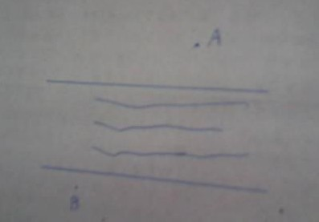

一道初二数学的作图题
2010-06-12
做两条互相平行的直线，把它们当做河的两岸，两条河岸的中间是河，在河的两岸各随意做两点A,B，当做两个村子，要求在河上架一座桥，令A,B两村到桥的距离相等，且为了省钱，这座桥须与河岸垂直。问下1L如何证明A与B到桥的距离相等（不是到桥的中心距离相等），2L的方法说白了就是取AB中点，但这不对。3L……您老认为换行就不算抄袭吗…… 4L,不是A与B到桥的距离最短，是到桥的距离相等……

可以这样考虑，设桥为CD，总长度是A-C-D-B，由于CD是定值，所以要让AC+DB最短。下面的做法就是要消除CD的干扰：过B作河岸的垂线，垂足设为E，延长BE交河对岸于F，在BF上截取BM=EF，再连接AM，交F所在的岸边于C点，即为所求。相应的D点也确定了。这里CD=BM，而AM又最短。如果要证明的话在异于C、D两点取点，用平行四边形来转化线段长，再用“三角形两边之和大于第三边”即可。